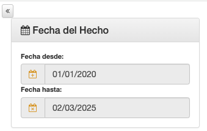
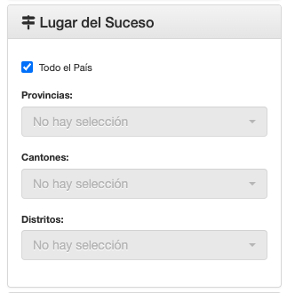
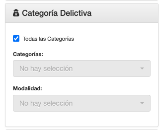
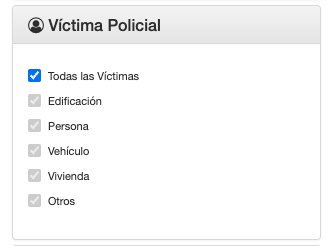
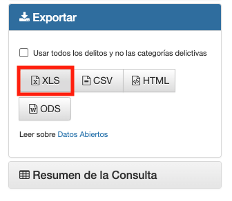

Automatización de la descarga de datos de delitos en Costa Rica
Introducción: ¿Por qué hacer esto?
Todos los días escuchamos en las noticias acerca del incremento en los homicidios y la inseguridad en Costa Rica. Por un lado, la dice que la inseguridad está fatal, por otro, algunos sostienen que “es solo percepción” y que “se matan entre ellos” (refiriéndose a los delincuentes). Entre tantos dimes y diretes, creo que este extracto del libro la sociedad del cansancio representa cómo nos podemos sentir.
En la era digital, el exceso de información nos satura hasta el punto de la apatía; el bombardeo constante de datos nos impide distinguir lo esencial y nos sumerge en un estado de desconfianza generalizada. Han (2012)
Veamos algunos de esas noticias:
Creo que es fundamental que, como ciudadanos, tengamos acceso a la información para que podamos comprobar de manera independiente los datos que nos bombardean desde todas partes. No me malentiendan, no se trata de negar las instituciones ni de estar en contra de la prensa, para nada, sino de poder, dentro de lo posible, acceder a las fuentes y echar un vistazo a lo que pasa en el país, incluso más como un ejercicio de empatía que informativo.
Con esa idea en mente, surge este mini tutorial, en el cual mostraré, paso a paso, cómo utilizar R para descargar y unificar la información proporcionada por el Poder Judicial.
Automatizar la descarga
El primer problema se presentó cuando noté que la plataforma solo permite descargar los datos un año a la vez (o al menos a mí me da error si intento descargar varios años juntos). Hacerlo manualmente para 10 años no era mi opción preferida. Soy de ese tipo de persona que prefiere pasar dos horas automatizando una tarea que podría hacerse en 15 minutos manualmente. Eso debe tener un nombre o, como mínimo, estar tipificado en el DSM-5.
Para lograr esto, vamos a utilizar los paquetes selenider y chromote, una combinación que he venido probando desde hace poco con muy buenos resultados, nos permite hacer web scraping de forma sencilla y, además, resuelve muchos de los problemas que teníamos al trabajar con RSelenium.
Selenider en 1 minuto:
- Levantas una sesión que controla el navegador por defecto, Chrome.
- Abrir una url
- Seleccionas elementos de la web usando CSS o XPath.
- Realizas acciones como clic, llenar información, hacer scroll, etc.
elem_click()
Realiza un clic en el elemento especificado.
elem_right_click()
Ejecuta un clic derecho sobre el elemento.
elem_double_click()
Realiza un doble clic en el elemento.
elem_hover()
Posiciona el cursor sobre el elemento, simulando la acción de pasar el mouse por encima.
elem_scroll_to()
Desplaza la vista hasta el elemento indicado, lo cual es útil si el elemento no está visible antes de realizar un clic o interacción.
Veamos cómo es el proceso manual para identificar qué es lo que debemos automatizar:
- Indicar las fechas de inicio y fin.

- Indicar el lugar del suceso.

- Seleccionar la categoría delictiva.

- Indicar si se trata de víctima policial.

- Hacer clic en el botón de descargar Excel.

Acá me quedé pegado en un buen rato intentando como explicar el código, y llegué a la conclusión de que lo más razonable es un video corto.
Puedes ver el código completo acá.
library(rvest)
library(selenider)
library(lubridate)
library(fs)
library(purrr)
library(janitor)
library(glue)
library(chromote)
library(dplyr)
library(readr)
library(stringr)
wait_for_download <- function(download_dir, filename, timeout = 60) {
start_time <- Sys.time()
file_path <- file.path(download_dir, filename)
while (
as.numeric(difftime(Sys.time(), start_time, units = "secs")) <= timeout
) {
if (
file.exists(file_path) &&
length(list.files(download_dir, pattern = "\\.crdownload$")) == 0
) {
return(TRUE)
}
Sys.sleep(1)
}
cli::cli_abort("Se acabó el tiempo de espera")
}
download_dataset_pj <- function(
date = lubridate::today(),
download_dir = "data",
filename = "Estadisticas.xls"
) {
dir.create(download_dir, showWarnings = FALSE, recursive = TRUE)
full_path <- file.path(download_dir, filename)
session <- selenider_session(
"chromote",
timeout = 10,
options = chromote_options(headless = TRUE)
)
session$driver$Browser$setDownloadBehavior(
behavior = "allow",
downloadPath = normalizePath(download_dir)
)
open_url("https://pjenlinea3.poder-judicial.go.cr/estadisticasoij/")
start_date <- format(date, "%d/%m/%Y")
end_date <- update(date, month = 12, day = 31)
end_date <- if_else(end_date > today(), today(), end_date)
end_date <- format(end_date, "%d/%m/%Y")
execute_js_expr(
"document.getElementById('txtFechaFinal').removeAttribute('readonly',0);"
)
execute_js_expr(glue(
"document.getElementById('txtFechaFinal').value = '{end_date}';",
))
execute_js_expr(
"document.getElementById('txtFechaInicio').removeAttribute('readonly',0);"
)
execute_js_expr(glue(
"document.getElementById('txtFechaInicio').value = '{start_date}';",
))
execute_js_expr("document.getElementById('chbTodoPais').click();")
execute_js_expr("document.getElementById('chbTodoDelitos').click();")
execute_js_expr("document.getElementById('chbTodaVictima').click();")
execute_js_expr("document.getElementById('btnExcel').click();")
wait_for_download(download_dir, filename)
new_filename <- paste0("delitos_", format(date, "%Y-%m-%d"), ".html")
new_path <- file.path(download_dir, new_filename)
fs::file_move(full_path, new_path)
return(new_path)
}
.years <- ymd("2025-01-01") - years(0:11)
df <- map(
.years,
\(x) {
.file <- download_dataset_pj(date = x)
df <- read_html(.file) |>
html_table()
df <- df[[1]]
return(df)
},
.progress = TRUE
) |>
list_rbind()
df |>
clean_names() |>
mutate(
across(where(is.character), str_to_title),
fecha = ymd(fecha)
) |>
readr::write_rds(glue("data/delitos_{today()}.rds"))Problemas con el archivo descargado 😢
Luego de hacer la descarga apareció un problema. Al intentar abrir el archivo desde R, me encontré con un error, el archivo parecía corrupto o mal formateado. Era raro, porque si abría el archivo directamente desde Excel, todo funcionaba bien.
Revisando el código fuente de la web, pude encontrar que el archivo se genera a partir de una tabla HTML que se codifica en Base64, asignándole la extensión .xls y un MIME type de Excel (Excel viejito). Esto quiere decir que, aunque se pretende que sea un archivo de Excel, el contenido real es HTML y no el formato binario nativo de Excel (xls). Excel, que siempre que puede resuelve, logra detectar ese contenido y mostrar la tabla correctamente, pero el paquete readxl, que utiliza la librería libxls, requiere específicamente el formato binario de Excel para poder abrirlo. Por eso, al intentar abrirlo en R se produce el error libxls error: Unable to open file, porque, sorpresa, ¡no es un archivo de Excel!
La solución fue sencilla, si se trata de un archivo HTML, basta con cambiarle la extensión de .xls a .html y usar la función read_html del paquete rvest. Una vez resuelto esto, quedó completamente automatizado el proceso de descarga de 10 años de registros en un clic.
Limpieza y normalización de los datos
A partir de aquí, el trabajo de limpieza es muy corto. Se normalizan los nombres de las columnas y, además, se ajustan las variables de tipo texto para evitar tenerlas únicamente en mayúsculas.
Aquí, alguien podría preguntarse: ¿por qué, entonces, no descargar directamente el archivo .csv y listo? Pasa que, por algún motivo, al archivo CSV le falta la columna distrito. Asumo que está relacionado con la forma en que se genera a partir de la tabla HTML original, pero, la verdad, no lo investigué.
Puedes descargar los datos en el siguiente enlace descargar datos
¿Y ahora qué?
Esta sería la primera parte del trabajo. Ahora que tenemos los datos, estamos listos para realizar un análisis. En el siguiente post hablaremos sobre el tema de los homicidios en Costa Rica, su evolución, y podremos salir de la duda que inició todo: ¿es realmente el aumento de la inseguridad solo un tema de percepción (como hace un tiempo decía un ministro en un podcast) Spoiler:

Finalmente, un reconocimiento especial al Poder Judicial por el esfuerzo y la transparencia de poner estos datos a disposición de la ciudadanía, sin embargo, es importante mencionar que la plataforma todavía tiene puntos destacables de mejora.
¡Nos vemos en ese próximo post!
Referencias
Cómo citar
@online{agüero_b2025,
author = {Agüero B, Carlos},
title = {Automatización de la descarga de datos de delitos en Costa
Rica},
date = {2025-03-04},
url = {https://aprendetidyverse.com/posts/003_descargar_delitos_costarica.html},
langid = {es}
}